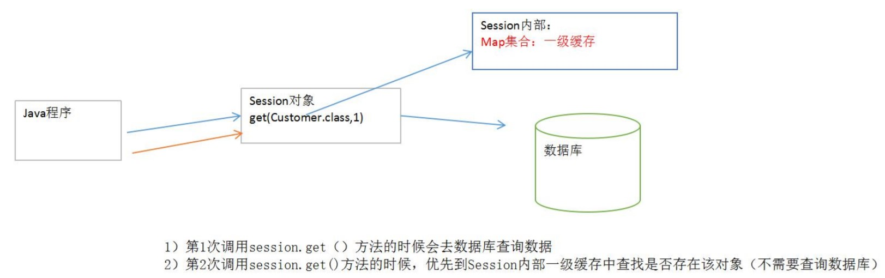

Hibernate事务以及一级缓存
Hibernate事务以及一级缓存回顾任务目标一. Hibernate中的事务1. 事务的回顾1.1 什么是事务(Transaction)1.2 为什么要使用事务?1.3 事务的特性1.4 事务的并发问题1.5 事务的隔离级别2.Hibernate的事务隔离级别2.1 配置3. 使用ThreadLocal管理Session3.1 事务管理案例3.2 解决方案3.2.1 修改session的获取方式3.2.2 在hibernate.cfg.xml中配置二. 更新数据丢失1. 什么是更新数据丢失?2. 更新数据丢失解决方案三. 持久化类讲解1. 什么是持久化类?2. 持久化类编写规则3. 自然和代理主键4. 主键生成策略四. 持久化对象1. 项目准备1.1 创建项目 hibernate-02-optimize2. 持久化对象介绍3. 持久化对象的三种状态3. 持久化对象状态转换五. Hibernate的一级缓存1. 一级缓存介绍2. Hibernate 的快照机制3. 一级缓存管理课前默写作业面试题
回顾
1. Hibernate配置文件的使用 2. Hibernate基本使用步骤 3. 事务的基本作用
任务
1. Hibernate中事务详解 2. 更新数据丢失问题 3. Hibernate中的主键策略 4. Hibernate对象的三种状态 5. Hibernate的一级缓存
目标
1. 掌握Hibernate中事务详解 2. 掌握更新数据丢失问题 3. 掌握Hibernate中的主键策略 4. 掌握Hibernate对象的三种状态 5. 掌握Hibernate的一级缓存
一. Hibernate中的事务
1. 事务的回顾
1.1 什么是事务(Transaction)
是并发控制的单元，是用户定义的一个操作序列。这些操作要么都做，要么都不做，是一个不可分割的工作单位。通过事务，sql 能将逻辑相关的一组操作绑定在一起，以便服务器 保持数据的完整性。事务通常是以begin transaction开始，以commit或rollback结束。Commint表示提交，即提交事务的所有操作。具体地说就是将事务中所有对数据的更新写回到磁盘上的物理数据库中去，事务正常结束。Rollback表示回滚，即在事务运行的过程中发生了某种故障，事务不能继续进行，系统将事务中对数据库的所有已完成的操作全部撤消，滚回到事务开始的状态。
设想网上购物的一次交易，其付款过程至少包括以下几步数据库操作：
1）更新客户所购商品的库存信息
2）保存客户付款信息--可能包括与银行系统的交互
3）生成订单并且保存到数据库中
4）更新用户相关信息，例如购物数量等等
正常的情况下，这些操作将顺利进行，最终交易成功，与交易相关的所有数据库信息也成功地更新。但是，如果在这一系列过程中任何一个环节出了差错，例如在更新商品库存信息时发生异常、该顾客银行帐户存款不足等，都将导致交易失败。一旦交易失败，数据库中所有信息都必须保持交易前的状态不变，比如最后一步更新用户信息时失败而导致交易失败，那么必须保证这笔失败的交易不影响数据库的状态--库存信息没有被更新、用户也没有付款，订单也没有生成。否则，数据库的信息将会一片混乱而不可预测。
数据库事务正是用来保证这种情况下交易的平稳性和可预测性的技术
1.2 为什么要使用事务?
- 为了提高性能
- 为了保持业务流程的完整性
- 使用分布式事务
1.3 事务的特性
ACID
- 原子性（atomicity）
事务是数据库的逻辑工作单位，而且是必须是原子工作单位，对于其数据修改，要么全部执行，要么全部不执行。
- 一致性（consistency）
事务在完成时，必须是所有的数据都保持一致状态。在相关数据库中，所有规则都必须应用于事务的修改，以保持所有数据的完整性。
- 隔离性（isolation）
一个事务的执行不能被其他事务所影响。企业级的数据库每一秒钟都可能应付成千上万的并发访问，因而带来了并发控制的问题。由数据库理论可知，由于并发访问，在不可预料的时刻可能引发如下几个可以预料的问题：
- 持久性（durability）
一个事务一旦提交，事物的操作便永久性的保存在DB中。即使此时再执行回滚操作也不能撤消所做的更改
1.4 事务的并发问题
- 脏读（Dirty Read）
一个事务读取到了另一个事务未提交的数据操作结果。这是相当危险的，因为很可能所有的操作都被回滚。
- 不可重复读（虚读）（NonRepeatable Read）
一个事务对同一行数据重复读取两次，但是却得到了不同的结果。例如事务T1读取某一数据后，事务T2对其做了修改，当事务T1再次读该数据时得到与前一次不同的值。
- 幻读（Phantom Read）
事务在操作过程中进行两次查询，第二次查询的结果包含了第一次查询中未出现的数据或者缺少了第一次查询中出现的数据，这是因为在两次查询过程中有另外一个事务插入数据造成的
1.5 事务的隔离级别
- 1- 读未提交
Read uncommitted：最低级别，以上情况均无法保证。
- 2- 读已提交
Read committed：可避免脏读情况发生。（Oracle默认）
- 4- 可重复读
Repeatable read：可避免脏读、不可重复读情况的发生。不可以避免虚读。（MySQl默认）
- 8- 串行化读
Serializable：事务只能一个一个执行，避免了脏读、不可重复读、幻读。执行效率慢，使用时慎重.
2.Hibernate的事务隔离级别
2.1 配置
在Hibernate.cfg.xml中进行配置
xxxxxxxxxx<!-- 修复 hibernate 的隔离级别 --><property name="hibernate.connection.isolation">4</property>可以配置四个值:
1: read uncommited
2: read commited
4: repeatable read
8: serializeable
3. 使用ThreadLocal管理Session
3.1 事务管理案例
注意：下面的测试无法保存数据，因为使用 openSession()方法拿到的都是独立的session对象，事物中提交的session并不是dao中操作的session.
JavaDao代码:
xxxxxxxxxxpackage com.qfedu.hibernate.dao;import org.hibernate.Session;import com.qfedu.hibernate.pojo.Customer;import com.qfedu.hibernate.utils.HibernateUtil;public class CustomerDao { public void save(Customer cust){ Session session = HibernateUtil.openSession();//每次都拿到新的session session.save(cust); //不能关闭session //session.close(); }}JavaService代码:
xxxxxxxxxxpackage com.qfedu.hibernate.service;import org.hibernate.Session;import org.hibernate.Transaction;import com.qfedu.hibernate.dao.CustomerDao;import com.qfedu.hibernate.pojo.Customer;import com.qfedu.hibernate.utils.HibernateUtil;public class CustomerService { private CustomerDao dao = new CustomerDao();; public void save(Customer c1,Customer c2){ Session session = HibernateUtil.openSession(); //开启事务 Transaction tx = session.beginTransaction(); try { dao.save(c1); dao.save(c2); tx.commit(); } catch (Exception e) { e.printStackTrace(); tx.rollback(); } }}测试:
xxxxxxxxxx /** * 事务测试 */ public void test2(){ Customer c1 = new Customer(); c1.setName("张三"); Customer c2 = new Customer(); c2.setName("李四"); CustomerService service = new CustomerService(); service.save(c1, c2); }3.2 解决方案
3.2.1 修改session的获取方式
将dao层和service层中需要用到session的地方使用getCurrentSession()
xxxxxxxxxxSession session = HibernateUtil.getCurrentSession();3.2.2 在hibernate.cfg.xml中配置
xxxxxxxxxx<!-- 让session被TheadLocal管理 --><property name="current_session_context_class">thread</property> 二. 更新数据丢失
1. 什么是更新数据丢失?
- 如果不考虑隔离性，也会产生写入数据的问题，这一类的问题叫丢失更新的问题。
例如：两个事务同时对某一条记录做修改，就会引发丢失更新的问题。
A事务和B事务同时获取到一条数据，同时再做修改
如果A事务修改完成后，提交了事务
B事务修改完成后，不管是提交还是回滚，如果不做处理，都会对数据产生影响
两个同时更新! 第一次更新别第二次更新的覆盖了!!
2. 更新数据丢失解决方案
悲观锁:
采用的是数据库提供的一种锁机制，如果采用做了这种机制，在SQL语句的后面添加 for update 子句
当A事务在操作该条记录时，会把该条记录锁起来，其他事务是不能操作这条记录的。
只有当A事务提交后，锁释放了，其他事务才能操作该条记录
实现代码:
xxxxxxxxxxsession.get(Customer.class, 1,LockMode.UPGRADE); //操作数第三个参数添加锁乐观锁:
采用版本号的机制来解决的。会给表结构添加一个字段version=0，默认值是0
当A事务在操作完该条记录，提交事务时，会先检查版本号，如果发生版本号的值相同时，才可以提交事务。同时会更新版本号version=1
当B事务操作完该条记录时，提交事务时，会先检查版本号，如果发现版本不同时，程序会出现错误。
xxxxxxxxxx 1.在对应的JavaBean中添加一个属性，名称可以是任意的。 例如：private Integer version; 提供get和set方法 2.在映射的配置文件中，提供<version name="version"/>标签即可。 对比version 如果版本不是最新的 !那么操作不成功! <!-- 就是实体实体类中version --> <version name="version"></version>
三. 持久化类讲解
1. 什么是持久化类?
持久化类：是指其实例需要被 Hibernate 持久化到数据库中的类。持久化类符合JavaBean的规范，包含一些属性，以及与之对应的 getXXX() 和 setXXX() 方法。
2. 持久化类编写规则
- get/set方法必须符合特定的命名规则，get 和set 后面紧跟属性的名字，并且属性名的首字母为大写。
name属性的 get 方法为getName()，如果写成 getname() 或 getNAME() 会导致 Hibernate 运行时抛出以下异常：net.sf.hibernate.PropertyNotFoundException:Could not find a getter for porperty name in class mypack XXX- 如果属性为
boolean类型，那么 get 方法名即可以用get作为前缀，也可以用is作为前缀。 - 持久化类必须有一个主键属性，用来唯一标识类的每一个对象。这个主键属性被称为对象标示符（OID，Object Identifier）。
- Hibernate要求持久化类必须提供一个不带参的默认构造方法，在程序运行时，Hibernate 运用Java反射机制，调用java.Lang.raflect.Constructor.newInstance()方法来构造持久化类的实例。
- 使用非final类。在运行时生成代理是 Hibernate 的一个重要功能。如果持久化类没有实现任何接口的话，Hibernate使用CGLIB生成代理，该代理对象时持久化类子类的实例。如果使用了final类，将无法生成CGLIB代理。还有一个可选的策略，让 Hibernate 持久化类实现一个所有方法都声明为public的接口，此时将使用JDK的动态代理。同时应该避免在非final类中声明public final的方法。如果非要使用一个有public final的类，你必须通过设置lazy=”false“来明确地禁用代理
3. 自然和代理主键
持久化类中必须包含一个主键属性,主键通常分为两种,自然和代理!
- 自然主键:对象本身的一个属性.创建一个人员表,每个人都有一个身份证号.(唯一的)使用身份证号作为表的主键.自然主键.（开发中不会使用这种方式）
- 代理主键:不是对象本身的一个属性.创建一个人员表,为每个人员单独创建一个字段.用这个字段作为主键.代理主键.（开发中推荐使用这种方式）
4. 主键生成策略
hibernate框架可以有效的帮助我们生成数据主键,可以是自增长,也可以是UUID等模式!
修改生成策略位置:
xxxxxxxxxx<!-- 配置主键id name javaBean的属性 column 表结构的属性 如果相同可以去掉 column--> <!-- 主键生成策略,修改class值即代表修改主键生成策略 --> <id name="cust_id" column="cust_id"> <generator class="native"/> </id>具体策略值:
increment:适用于short,int,long作为主键.不是使用的数据库自动增长机制。
Hibernate中提供的一种增长机制.
先进行查询 :select max(id) from user;
再进行插入 :获得最大值+1作为新的记录的主键.
问题:不能在集群环境下或者有并发访问的情况下使用.
identity:适用于short,int,long作为主键。但是这个必须使用在有自动增长数据库中.采用的是数据库底层的自动增长机制.底层使用的是数据库的自动增长(auto_increment).像Oracle数据库没有自动增长.
所以此值mysql支持!
sequence:适用于short,int,long作为主键.底层使用的是序列的增长方式.Oracle数据库底层没有自动增长,想自动增长需要使用序列.
此值Oracle支持!
uuid:适用于char,varchar类型的作为主键.
使用随机的字符串作为主键.
native:本地策略.根据底层的数据库不同,自动选择适用于该种数据库的生成策略.(short,int,long)
如果底层使用的MySQL数据库:相当于identity.
如果底层使用Oracle数据库:相当于sequence.
assigned:主键的生成不用Hibernate管理了.必须手动设置主键.
- 持久化对象的几种状态
- 持久化对象状态转换
四. 持久化对象
1. 项目准备
1.1 创建项目 hibernate-02-optimize
1.2 导入jar包
1.3 复制上个项目实体(客户),映射,配置和工具类等!
额外添加一个用户表,和实体类!
建表语句
xxxxxxxxxxCREATE TABLE `user`(id integer primary key auto_increment,name varchar(10) not null,age integer,version integer)
创建实体类
xxxxxxxxxxpublic class User {private Integer id;private String name;private Integer age;private Integer version;//getter setter toString}创建持久化类映射文件
位置: 实体类相同文件夹
命名:User.hbm.xml
xxxxxxxxxx<hibernate-mapping><!-- 配置类和表的映射 catalog="" 数据库名称--><class name="com.itqf.bean.User" table="user" ><!-- 配置主键idname javaBean的属性column 表结构的属性如果相同可以去掉 column--><id name="id" column="id"><!-- 主键生成策略 递增 --><generator class="native"/></id><!-- 就是实体实体类中version --><version name="version"></version><!-- 其他的属性 --><property name="name" column="name" length="30"/><property name="age" column="age"/></class></hibernate-mapping>修改核心配置文件,添加User的映射文件
xxxxxxxxxx<!-- 映射的 com开始--><mapping resource="com/itqf/bean/Customer.hbm.xml"/><mapping resource="com/itqf/bean/User.hbm.xml"/>
2. 持久化对象介绍
持久化类创建的对象就是持久化对象!
3. 持久化对象的三种状态
Hibernate为了管理持久化对象：将持久化对象分成了三个状态
瞬时态:Transient Object
没有持久化标识OID, 没有被纳入到Session对象的管理.
持久态:Persistent Object
有持久化标识OID,已经被纳入到Session对象的管理.
脱管态:Detached Object
有持久化标识OID,没有被纳入到Session对象的管理.
持久化对象中,持久态最为重要,因为持久太对象具有自动更新功能!
展示持久化对象状态:
xxxxxxxxxxpublic void testStatus(){ Session session = HibernateUtil.getSession(); Transaction beginTransaction = session.beginTransaction(); //持久化对象 User user = new User(); user.setName("王老五"); user.setAge(36); //----------- 以上是瞬时态 没有session管理没有 oid------------------ //返回值就是生成的id Serializable id = session.save(user); System.out.println(id); beginTransaction.commit(); //------------ 以上是持久态,有session管理,有oid----------- session.close(); System.out.println(user.getId()); System.out.println(user.getName()); //------------- 以上托管态, 有oid 但是没有session管理!----------- }测试自动更新功能:
xxxxxxxxxx public void testAuto(){ Session session = HibernateUtil.getSession(); Transaction beginTransaction = session.beginTransaction(); User user = session.get(User.class, "8a8a200c5d7db0f7015d7db0fe280000"); user.setName("修改的name"); //看后台输出会发现,不用调用update方法,也会触发sql语句修改用户的name属性! beginTransaction.commit(); session.close(); }自动更新功能,其实是借助session的一级缓存!一级缓存后面进行讲解!
3. 持久化对象状态转换

瞬时态 -- 没有持久化标识OID, 没有被纳入到Session对象的管理
获得瞬时态的对象
User user = new User()
瞬时态对象转换持久态
- save()/saveOrUpdate();
瞬时态对象转换成脱管态
- user.setId(1)
持久态-- 有持久化标识OID,已经被纳入到Session对象的管理
获得持久态的对象
get()/load();
持久态转换成瞬时态对象
- delete(); --- 比较有争议的，进入特殊的状态(删除态:Hibernate中不建议使用的)
持久态对象转成脱管态对象
- session的close()/evict()/clear();
脱管态-- 有持久化标识OID,没有被纳入到Session对象的管理
获得托管态对象:不建议直接获得脱管态的对象.
User user = new User();
user.setId(1);
脱管态对象转换成持久态对象
update();/saveOrUpdate()/lock();
脱管态对象转换成瞬时态对象
user.setId(null);
五. Hibernate的一级缓存
1. 一级缓存介绍
Hibernate的一级缓存是指Session（属于事务范围的缓存，由Hibernate管理，无需干预），它是一块内存空间，用来存放从数据库查询出的java对象，有了一级缓存，应用程序可以减少访问数据库的次数，提高了性能。
在使用Hibernate查询对象的时候，首先会使用对象属性的OID值（对应表中的主键）在Hibernate的一级缓存进行查找，如果找到，则取出返回，不会再查询数据库，如果没有找到，再到数据库中进行查询操作。然后将查询结果存放到Session一级缓存中。

一级缓存演示
xpackage com.qfedu.hibernate.test;import org.hibernate.Session;import org.hibernate.Transaction;import org.junit.Test;import com.qfedu.hibernate.pojo.Customer;import com.qfedu.hibernate.utils.HibernateUtil;public class CacheLevelOneTest {/*** 使用代码来证明Hibernate的一级缓存是存在的！*/public void testCache(){Session session = HibernateUtil.openSession();Transaction tx = session.beginTransaction();//第1次查询Customer c1 = session.get(Customer.class, 1L);System.out.println(c1);//第2次查询Customer c2 = session.get(Customer.class,1L);System.out.println(c2);//第二次查询不触发sql语句,直接获取缓存中的结果!tx.commit();session.close();}}
2. Hibernate 的快照机制
当执行 commit() 时，Hibernate同时会执行 flush() 方法，hibernate会清理session的一级缓存（flush），也就是将堆内存中的数据与快照中的数据进行对比，如果不一致，则会执行同步（update）操作，若相同，则不执行update。
1、快照是数据的副本 2、快照属于一级缓存 3、快照是在堆内存中的 4、快照的作用：保证数据一致性
xxxxxxxxxx/** * 说明持久态对象可以直接更新数据库的数据！ */public void testAutoUpdate(){ Session session = HibernateUtil.openSession(); Transaction tx = session.beginTransaction(); //获取到一个持久态对象 Customer cust = session.get(Customer.class, 1L); //修改cust的数据 cust.setName("汤姆"); //没有 必要执行update语句，因为现在持久态对象已经能够更新数据库的数据啦！ //session.update(cust); tx.commit(); session.close(); }3. 一级缓存管理
Q：如果持久态对象不在一级缓存中，可以更新数据库吗？
A：不能！
把对象移出一级缓存的方法：
session.evict(object) : 把一个对象移出一级缓存
session.clear() ： 把一级缓存的所有对象移出
测试：以下测试数据不会被更新
xxxxxxxxxx/** * 一级缓存的管理 */public void testEvictAndClear(){ Session session = HibernateUtil.openSession(); Transaction tx = session.beginTransaction(); Customer cust = session.get(Customer.class, 1L); //cust是持久态对象，在一级缓存 cust.setName("老王"); //把cust对象移出一级缓存 session.evict(cust); //清空一级缓存 //session.clear(); tx.commit(); session.close(); }课前默写
1. Hibernate的配置文件 2. Hibernate操作的基本步骤
作业
xxxxxxxxxx1. 使用Hibernate手写配置文件配置2. 使用单元测试的方式实现表的CRUD操作3. 测试上课讲解的对象的状态和一级缓存的作用表名 employee 中文表名称 人员信息表序号 字段名称 字段说明 类型 属性 备注1 id 编号 int 自增 主键2 name 用户名 varchar(20) 非空 3 birthday 生日 varchar(20) 非空 4 gender 性别 varchar(4) 5 career 职业 varchar(20) 6 address 地址 varchar(50) 7 mobile 手机 varchar(20)面试题
1. Hibernate中事务的特性 2. Hibernate中事务的传播性 3. Hibernate中的脏读、幻读、不可重复读 4. Hibernate中的悲观锁和乐观锁 5. Hibernate主键生成策略 6. Hibernate对象的三种状态 7. Hibernate的缓存